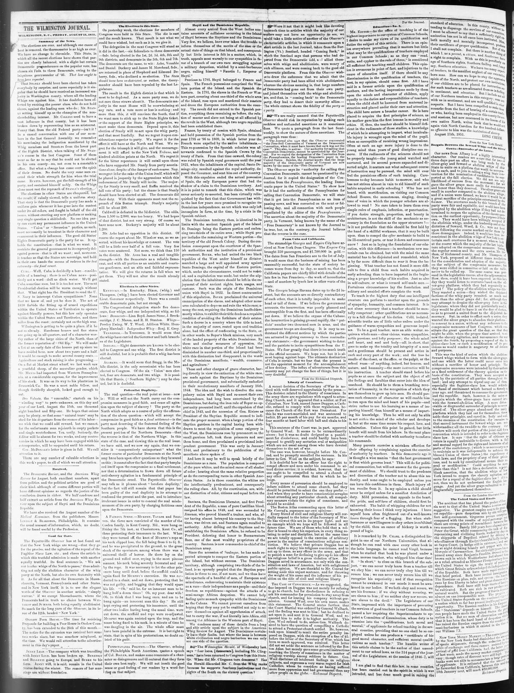

The idea and the wish to dissolve the com pulsory union
https://www.loc.gov/resource/sn84026536/1851-08-15/ed-1/?sp=2

See the original pageVer la página original
These and other charges of grave character, having directly in view the extinction of the white race, are made against the Haytians by the Dominican provisional government, and substantially embodied in their revolutionary manifesto of January 16th, 1844. The idea and the wish to dissolve the compulsory union with Hayti and re-assert their own independence, had long been entertained by the Dominicans, but during the iron rule of Boyer no opportunity presented itself, until the expulsion of that chief in 1843, and the accession of Gen. Riviere as President of the Haytian Republic seemed to indi-
How to cite this articleCómo citar este artículo
Wilmington Journal. (1851). Wilmington, N.C., August 15, 185115 de agosto de 1851. DR in the American PressRD en la Prensa Norteamericana. Library of Congress, Chronicling America: https://www.loc.gov/resource/sn84026536/1851-08-15/ed-1/?sp=2
ReferencesReferencias
Library of Congress, Chronicling America: Wilmington Journal, August 15, 185115 de agosto de 1851.
Send an observationEnviar una observación
Does this article connect with your family, your town, or something you know? Did we get something wrong? Write to us. Observations go to the editor's inbox and are read by a person.¿Este artículo conecta con su familia, su pueblo o algo que usted conoce? ¿Nos equivocamos en algo? Escríbanos. Las observaciones llegan al buzón del editor y las lee una persona.
Send observationEnviar observación